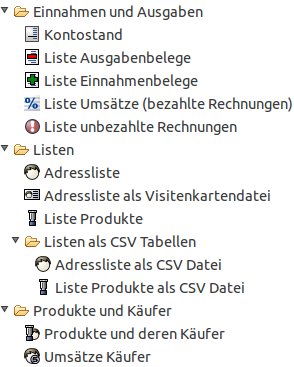

Fakturama bietet verschiedene Filter, um Daten zu importieren und zu exportieren. Damit lassen sich Produkte, Kontakte und Umsätze mit anderen Programmen austauschen oder Zusammenfassungen erstellen.
Import von Daten:
Export von Daten:
Liegen die Ausgaben bisher nur in einer Tabelle vor, können diese in Fakturama importiert werden, um diese nach der Vorsteuer oder Kontenart zusammenzufassen.
Siehe Ausgaben aus CSV Datei importieren
Adressdaten können aus einer CSV Tabelle in Fakturama importiert werden. Damit ist eine Datenübernahme aus einem anderen Programm möglich.
Siehe Kontakte aus CSV Datei importieren
Produkte können aus einer CSV Tabelle in Fakturama importiert werden.
Siehe Produkte aus CSV Datei importieren
Exportiert den Kontostand und Saldi innerhalb eines Zeitraums für ein Konto in einer OpenOffice.org / LibreOffice Tabelle.
Siehe Export Kontostand
Exportiert eine Liste mit den Ausgaben (Ausgabebelege) in einer OpenOffice.org / LibreOffice Tabelle.
Siehe Export Liste Ausgabebelege
Exportiert eine Liste mit den Einnahmen (Einnahmebelege) in einer OpenOffice.org / LibreOffice Tabelle.
Siehe Export Liste Einnahmebelege
Exportiert eine Liste mit den Umsätzen (alle bezahlten Rechnungen) in einer OpenOffice.org / LibreOffice Tabelle.
Siehe Export Liste Umsätze
Exportiert eine Liste mit allen unbezahlten Rechnungen in einer OpenOffice.org / LibreOffice Tabelle.
Siehe Export Liste unbezahlte Rechnungen
Exportiert eine Liste mit allen Kontakten in einer OpenOffice.org / LibreOffice Tabelle.
Siehe Export Adressliste
Exportiert eine Liste mit allen Kontakten in einer VCard Visitenkartendatei. Diese Datei lässt sich von vielen Adressbuchprogrammen wieder einlesen.
Siehe Export Adressliste als Visitenkartendatei
Exportiert eine Liste mit allen Produkten in einer OpenOffice.org / LibreOffice Tabelle.
Siehe Export Liste Produkte
Exportiert eine Liste mit allen Produkten in einer OpenOffice.org / LibreOffice Tabelle.
Siehe Export Liste Produkte
Exportiert eine Liste mit allen Kontakten in einer CSV Datei.
Siehe Export Adressliste als CSV Datei
Exportiert eine Liste mit allen Produkten in einer CSV Datei.
Siehe Export Liste Produkte als CSV Datei
Erstellt eine Liste mit den meist gekaufen Produkten und einer Liste der Käufer. Die Liste kann nach Menge oder nach Umsatz sortiert werden.
Siehe Export Produkte und deren Käufer
Erstellt eine Liste mit den Umsätzen aller Käufer. Die Liste ist nach dem Umsatz sortiert.